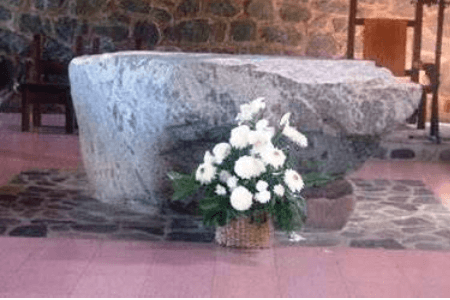
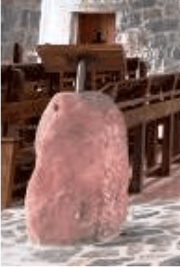
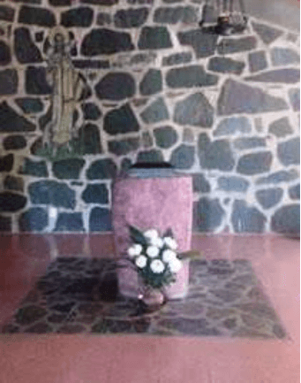
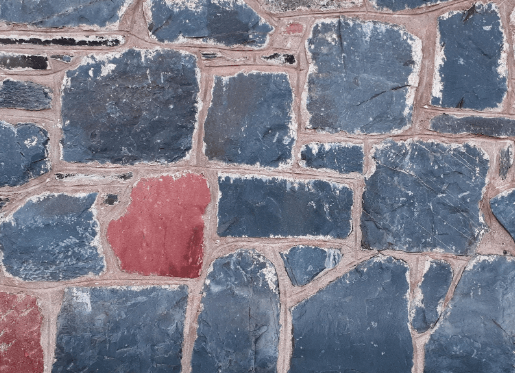

Muchas personas se acercan durante todo el año al monasterio, algunas como turistas en vacaciones o fines de semana largos, movidos por la curiosidad. Sacan fotos, aprecian la naturaleza, el paisaje, valoran lo cultural, la arquitectura, las obras de Ballester Peña o Leikam, el gregoriano y la historia.
Compran productos artesanales y recuerdos, pero muchos quedan impresionados al descubrir que el monasterio está construido con piedras. Este detalle no menor forma parte de nuestra vida cotidiana y comunitaria, para que seamos como las piedras de nuestra Iglesia que fueron colocadas una al lado de la otra, o una encima de otra para constituir como piedras vivas de un templo santo en el Señor.
Para saber más de nuestras piedras
A modo de colofón, compartimos datos sobre la formación prehistórica, la contextura y edad de las piedras de nuestra iglesia proporcionados por científicos del Instituto Lillo, la Licenciada en Ciencias Geológicas Dora Lucila Ruiz y el Profesor Geografo Enrique Setti. Cito textualmente el escrito que nos dejaron reseñando su investigación.
El Altar

“Está formado por un gran bloque extraído del lecho del Río Grande, uno de los numerosos afluentes que posteriormente forman el Lules, tributario a su vez del Río Dulce. Este bloque es producto de un desprendimiento de las Cumbres Calchaquíes, efecto de una previa meteorización, del agua de lluvia, el viento, diferencias de temperatura sobre la roca y posterior transporte por torrencialidad. Desde el punto de vista geológico se trata de una roca ígnea (“ignis” fuego) de tipo granítica. En ella se puede observar claramente xenolitos (“xenos: extraño, litos: roca”) pertenecientes al grupo de rocas metamórficas, las más antiguas del planeta. En este caso los xenolíticos corresponden al llamado Basamento precámbrico cuya edad estaría entre los 2000 y 3500 millones de años. Se caracterizan por ser ligeramente redondeados, con abundantes minerales de feldespato potásico de color rosado, cuarzo y minerales micáceos. También se observan cristales de turmalina alargados y de color negro”.
Ambón y Pie del Sagrario


“Estas rocas han sido extraídas del río Matadero, hoy Siambón, (el texto dice: “río La Hoyada?) en El Siambón. Están formadas por una arenisca de color rosado y corresponden a las denominadas rocas sedimentarias. En este caso se trata de una arena consolidada mediante un cemento de origen natural ferruginoso y que se encuentra entre los granos. (de allí su color rojizo). Pertenecen al denominado grupo Salta, subgrupo Pirgua, formación Los Blanquitos que es la parte superior del Subgrupo anteriormente mencionado, así denominado por su localidad tipo, o sea donde se encuentra su mayor extensión areal corresponde al cerro Pirgua, provincia de Salta. El grupo Salta tiene una edad mesozoica periodo cretácico superior, de edad aproximada 65 millones de años. Mineralógicamente los areniscos están constituidos por granos de cuarzo de color blanco grisáceo, tamaño mediano o pequeño. También se observan trozos de rocas volcánicas que pertenecerían a los basaltos (rocas ígneas extrusivas) de la formación El Cadillal, edad cretácica superior.”
Piedras de las paredes

El texto de los científicos del Lillo no habla de la contextura y edad de las piedras de las paredes de la iglesia y del Monasterio, también extraídas del Rio Siambón, pero, providencialmente al terminar de escribir la citación de su escrito llegó de visita al Monasterio la Licenciada Dora Lucila Ruiz quien confirmó mis recuerdos de que en ocasión de su investigación nos habían dicho que la formación y edad de esas piedras superan las mencionadas en su estudio, aseverándome que son por mucho las más antiguas.
Liturgia cósmica
Creación, historia y culto mantienen una relación de interdependencia: la creación espera la Alianza, pero la Alianza consuma la creación y va a la par que ella. Pero si el culto —bien entendido— es el alma de la Alianza, eso significa que no sólo salva al hombre, sino que quiere arrastrar a toda la creación hacia el interior de la comunión con Dios. Podemos decir que la meta del culto y la meta de toda la creación es la misma: la divinización, un mundo de libertad y de amor. Con ello aparece lo histórico dentro de lo «cósmico». Todo el culto es ahora participación en esta «Pascua» de Cristo, en ese «paso» de lo divino a lo humano, de la muerte a la vida, hacia la unidad de Dios y el hombre. El culto cristiano es, de esta forma, el cumplimiento y la realización concretos de la palabra que Jesús proclamó el primer día de la gran semana, el Domingo de Ramos, en el templo de Jerusalén: “Cuando yo sea elevado sobre la tierra, atraeré a todos hacia mí.” (Jn 12,32)
La liturgia histórica del cristianismo es y seguirá siendo cósmica.
Joseph Ratzinger - El Espíritu de la Liturgia Es fascinante pensar que las piedras de nuestro altar, nuestro ambón, nuestro sagrario, nuestras paredes, celebran con nosotros la Palabra, la Eucaristía, la alabanza sálmica, la adoración, millones y millones de años de historia cósmica con voz silenciosa y clamorosa en la que la creación entera aguarda expectante participar en la revelación y gloriosa libertad de los hijos de Dios en la plenitud escatológica de la Parusía exclamando con la Esposa: MARANATHA: VEN SEÑOR JESÚS